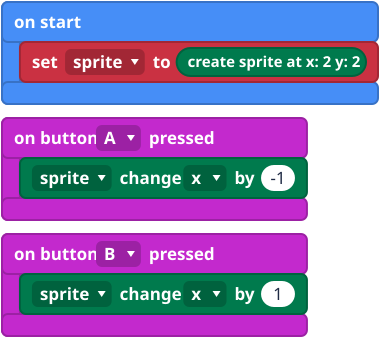
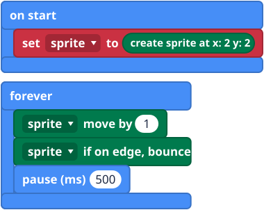
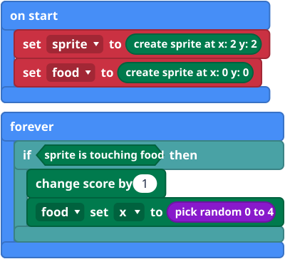

What it is
A sprite is a character on the lights: one light that you can move around. It has a place, written (x, y) like on the LED grid, and it can move, turn and bump into things. x counts 0 to 4 from left to right, and y counts 0 to 4 from top to bottom. A new sprite faces right.
This is how you make games on the micro:bit. The sprite blocks are in the Game group.
The blocks


Mini examples



Try this
- Move the sprite left and right with A and B.
- Make it bounce along the lights.
- Add a second sprite called food at a random place, and score when you touch it.
- Harder: end the game with game over when the score reaches 10.
Common mistakes
- The sprite does not move. Check which blocks are inside which events. A forever loop needs a pause so you can see it move.
- Touching never happens. Both sprites must exist, and they must be on the same light.
- My sprite vanished. Do not use show blocks while a game runs, because they fight over the lights. Use change score by and game over instead.
- It shows the wrong sprite. A new sprite stored in the same variable replaces the old one.
The code in words
JavaScript: let sprite = game.createSprite(2, 2)
sprite.change(LedSpriteProperty.X, 1)
sprite.move(1)
sprite.ifOnEdgeBounce()
game.addScore(1)
Python: sprite = game.create_sprite(2, 2)
sprite.change(LedSpriteProperty.X, 1)
sprite.move(1)
sprite.if_on_edge_bounce()
game.add_score(1)
V1 and V2
The same on both.
Teacher notes
- Time: 40 to 60 minutes.
- Ideas covered: objects that have a place and actions, coordinates, collision and score.
- Common confusion: the variable holds the sprite, not a number.
- The block pictures are simplified drawings. Check the real blocks in MakeCode.